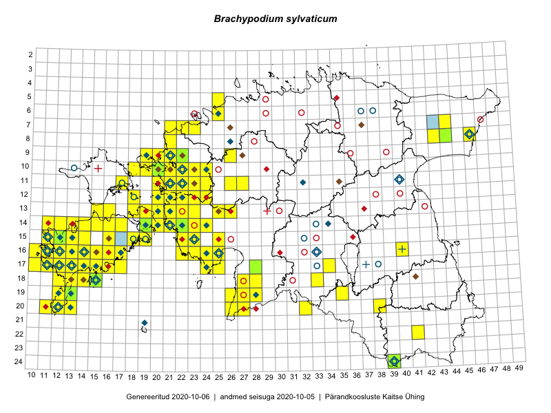

Brachypodium sylvaticum — mets-aruluste
Poaceae :: Brachypodium sylvaticum (Huds.) P.Beauv. (520)

Kaart põhineb 600 kirjel:
vaatlusi 349
herbaareksemplare 171
PKÜ kirjeid1 43
ELFi kirjeid2 37
Taime kaasaegsed ja ajaloolised leiukohad asuvad 137 ruudus.
Tingmärgid ja leidudega ruutude arvud periooditi uues (u) ja 2005 andmestikus (v)
| █ | vahemik | u3 | v4 |
|---|---|---|---|
| █ | 2006–2020 | 118 | – |
| ◆/◇ | 1971–2005 | 63 | 70 |
| ○ | 1921–1970 | 31 | 36 |
| + | kuni 1920 | 2 | 2 |
| × | hävinud | – | 0 |
| ? | kaheldav | – | 0 |
| Ruut | Leidja(d) | Leiuaeg | Kirje |
|---|---|---|---|
| 15-18 | Peedu Saar | 2020-09-11 | ruut/ala: Brachypodium sylvaticum (Huds.) P.Beauv. |
| 16-17 | Toomas Kukk | 2020-09-10 | ruut/ala: Brachypodium sylvaticum (Huds.) P.Beauv. |
| 16-16 | Toomas Kukk | 2020-09-10 | ruut/ala: Brachypodium sylvaticum (Huds.) P.Beauv. |
| 16-17 | Peedu Saar | 2020-09-10 | ruut/ala: Brachypodium sylvaticum (Huds.) P.Beauv. |
| 16-14 | Mari Reitalu, Sirje Azarov | 2020-09-03 | ruut/ala: Brachypodium sylvaticum (Huds.) P.Beauv. |
| 16-22 | Peedu Saar | 2020-08-31 | ruut/ala: Brachypodium sylvaticum (Huds.) P.Beauv. |
| 14-22 | Peedu Saar, Toomas Kukk | 2020-08-30 | ruut/ala: Brachypodium sylvaticum (Huds.) P.Beauv. |
| 14-16 | Mari Reitalu, Sirje Azarov | 2020-08-19–2020-08-20 | ruut/ala: Brachypodium sylvaticum (Huds.) P.Beauv. |
| 14-17 | Mari Reitalu, Sirje Azarov | 2020-08-18 | ruut/ala: Brachypodium sylvaticum (Huds.) P.Beauv. |
| 16-11 | Meeli Mesipuu | 2020-08-14 | punkt: Brachypodium sylvaticum (Huds.) P.Beauv. |
| 16-17 | Mari Reitalu, Sirje Azarov | 2020-08-08–2020-08-29 | ruut/ala: Brachypodium sylvaticum (Huds.) P.Beauv. |
| 10-21 | Peedu Saar | 2020-08-07 | ruut/ala: Brachypodium sylvaticum (Huds.) P.Beauv. |
| 09-21 | Ott Luuk | 2020-08-07 | ruut/ala: Brachypodium sylvaticum (Huds.) P.Beauv. |
| 11-17 | Peedu Saar | 2020-08-06 | ruut/ala: Brachypodium sylvaticum (Huds.) P.Beauv. |
| 10-23 | Ott Luuk | 2020-08-05 | ruut/ala: Brachypodium sylvaticum (Huds.) P.Beauv. |
| 09-26 | Ott Luuk | 2020-07-21–2020-07-23 | ruut/ala: Brachypodium sylvaticum (Huds.) P.Beauv. |
| 14-22 | Silvia Pihu | 2020-07-09 | ELF: 15962 |
| 17-11 | Peedu Saar | 2020-07-01 | punkt: Brachypodium sylvaticum (Huds.) P.Beauv. |
| 17-13 | Mari Reitalu | 2020-06-07 | ruut/ala: Brachypodium sylvaticum (Huds.) P.Beauv. |
| 17-15 | Mari Reitalu, Sirje Azarov, Triin Reitalu | 2020-05-28 | ruut/ala: Brachypodium sylvaticum (Huds.) P.Beauv. |
| 17-14 | Mari Reitalu, Triin Reitalu, Sirje Azarov | 2020-05-26 | ruut/ala: Brachypodium sylvaticum (Huds.) P.Beauv. |
| 17-16 | Peedu Saar, Toomas Kukk | 2019-09-27 | ruut/ala: Brachypodium sylvaticum (Huds.) P.Beauv. |
| 16-17 | Peedu Saar, Toomas Kukk | 2019-09-26 | ruut/ala: Brachypodium sylvaticum (Huds.) P.Beauv. |
| 15-14 | Mari Reitalu, Sirje Azarov | 2019-09-23 | ruut/ala: Brachypodium sylvaticum (Huds.) P.Beauv. |
| 10-22 | Toomas Kukk, Peedu Saar | 2019-09-19 | ruut/ala: Brachypodium sylvaticum (Huds.) P.Beauv. |
| 11-22 | Peedu Saar, Toomas Kukk | 2019-09-19 | ruut/ala: Brachypodium sylvaticum (Huds.) P.Beauv. |
| 10-21 | Ott Luuk | 2019-09-19 | ruut/ala: Brachypodium sylvaticum (Huds.) P.Beauv. |
| 10-19 | Peedu Saar, Toomas Kukk | 2019-09-18 | ruut/ala: Brachypodium sylvaticum (Huds.) P.Beauv. |
| 09-19 | Toomas Kukk, Peedu Saar | 2019-09-17 | ruut/ala: Brachypodium sylvaticum (Huds.) P.Beauv. |
| 08-21 | Peedu Saar | 2019-09-03 | ruut/ala: Brachypodium sylvaticum (Huds.) P.Beauv. |
| 12-23 | Peedu Saar, Toomas Kukk | 2019-08-30 | ruut/ala: Brachypodium sylvaticum (Huds.) P.Beauv. |
| 09-22 | Peedu Saar | 2019-08-16 | ruut/ala: Brachypodium sylvaticum (Huds.) P.Beauv. |
| 08-21 | Peedu Saar | 2019-07-26 | ruut/ala: Brachypodium sylvaticum (Huds.) P.Beauv. |
| 08-21 | Peedu Saar | 2019-07-26 | ELF: 21028 |
| 07-22 | Peedu Saar | 2019-07-24 | ruut/ala: Brachypodium sylvaticum (Huds.) P.Beauv. |
| 24-39 | Timo Luhamäe, Peedu Saar | 2019-07-12 | punkt: Brachypodium sylvaticum (Huds.) P.Beauv. |
| 24-39 | Peedu Saar, Timo Luhamäe | 2019-07-12 | TAA0149164: Brachypodium sylvaticum (Huds.) P.Beauv. |
| 19-13 | Mari Reitalu, Sirje Azarov | 2019-07-11 | ruut/ala: Brachypodium sylvaticum (Huds.) P.Beauv. |
| 19-13 | Mari Reitalu, Sirje Azarov | 2019-07-11 | ELF: 16766 |
| 12-18 | Toomas Kukk | 2019-06-01 | ruut/ala: Brachypodium sylvaticum (Huds.) P.Beauv. |
| 14-19 | Ott Luuk, Peedu Saar, Toomas Kukk | 2019-05-13 | punkt: Brachypodium sylvaticum (Huds.) P.Beauv. |
| 12-18 | Toomas Kukk | 2019-05-04 | ruut/ala: Brachypodium sylvaticum (Huds.) P.Beauv. |
| 17-24 | Peedu Saar | 2018-09-20 | ruut/ala: Brachypodium sylvaticum (Huds.) P.Beauv. |
| 12-18 | Toomas Kukk, Peeter Pärn | 2018-09-15 | ruut/ala: Brachypodium sylvaticum (Huds.) P.Beauv. |
| 16-17 | Toomas Kukk, Tiit Hallikma | 2018-08-30 | ruut/ala: Brachypodium sylvaticum (Huds.) P.Beauv. |
| 16-16 | Toomas Kukk, Tiit Hallikma | 2018-08-30 | ruut/ala: Brachypodium sylvaticum (Huds.) P.Beauv. |
| 12-22 | Peedu Saar, Toomas Kukk, Ott Luuk, Kersti Tambets, Sten Mander | 2018-08-17 | ruut/ala: Brachypodium sylvaticum (Huds.) P.Beauv. |
| 11-26 | Peedu Saar, Toomas Kukk, Ott Luuk, Kersti Tambets, Sten Mander | 2018-08-16 | ruut/ala: Brachypodium sylvaticum (Huds.) P.Beauv. |
| 11-26 | Ott Luuk, Toomas Kukk, Peedu Saar, Sten Mander, Kersti Tambets | 2018-08-16 | punkt: Brachypodium sylvaticum (Huds.) P.Beauv. |
| 10-22 | Tõnu Ploompuu | 2018-08-14 | ELF: 24598 |
| 14-16;14-17 | Mari Reitalu, Sirje Azarov | 2018-08-07 | ELF: 2585 |
| 18-33 | Peedu Saar | 2018-08-01 | ruut/ala: Brachypodium sylvaticum (Huds.) P.Beauv. |
| 18-33 | Peedu Saar | 2018-08-01 | punkt: Brachypodium sylvaticum (Huds.) P.Beauv. |
| 10-22 | Meeli Mesipuu | 2018-07-18 | ruut/ala: Brachypodium sylvaticum (Huds.) P.Beauv. |
| 15-12 | Triin Reitalu, Ansis Blaus | 2018-07-13 | punkt: Brachypodium sylvaticum (Huds.) P.Beauv. |
| 14-13 | Triin Reitalu, Ansis Blaus | 2018-07-10 | punkt: Brachypodium sylvaticum (Huds.) P.Beauv. |
| 13-21 | Mari Reitalu | 2018-07-05 | ruut/ala: Brachypodium sylvaticum (Huds.) P.Beauv. |
| 15-19 | Mari Reitalu, Sirje Azarov, Maris Sepp | 2018-05-23 | ruut/ala: Brachypodium sylvaticum (Huds.) P.Beauv. |
| 19-13 | Mari Reitalu, Triin Reitalu | 2017-10-11 | punkt: Brachypodium sylvaticum (Huds.) P.Beauv. |
| 20-12 | Mari Reitalu, Triin Reitalu | 2017-10-11 | ruut/ala: Brachypodium sylvaticum (Huds.) P.Beauv. |
| 12-18 | Toomas Kukk, Peeter Pärn | 2017-09-09–2017-09-10 | ruut/ala: Brachypodium sylvaticum (Huds.) P.Beauv. |
| 11-27 | Sirje Azarov | 2017-09-07 | ruut/ala: Brachypodium sylvaticum (Huds.) P.Beauv. |
| 10-21 | Peedu Saar, Toomas Kukk | 2017-09-07 | ruut/ala: Brachypodium sylvaticum (Huds.) P.Beauv. |
| 11-23 | Peedu Saar, Toomas Kukk | 2017-09-07 | ruut/ala: Brachypodium sylvaticum (Huds.) P.Beauv. |
| 11-24 | Peedu Saar, Toomas Kukk | 2017-09-07 | ruut/ala: Brachypodium sylvaticum (Huds.) P.Beauv. |
| 11-20 | Ott Luuk, Ilmar Uibopuu | 2017-08-10 | ruut/ala: Brachypodium sylvaticum (Huds.) P.Beauv. |
| 11-21 | Ilmar Uibopuu, Ott Luuk | 2017-08-10 | ruut/ala: Brachypodium sylvaticum (Huds.) P.Beauv. |
| 11-20 | Ilmar Uibopuu, Ott Luuk | 2017-08-10 | punkt: Brachypodium sylvaticum (Huds.) P.Beauv. |
| 14-20 | Meeli Mesipuu | 2017-08-07 | ruut/ala: Brachypodium sylvaticum (Huds.) P.Beauv. |
| 13-18 | Meeli Mesipuu | 2017-08-06 | ruut/ala: Brachypodium sylvaticum (Huds.) P.Beauv. |
| 20-38 | Triin Reitalu, Ansis Blaus | 2017-07-21 | punkt: Brachypodium sylvaticum (Huds.) P.Beauv. |
| 20-38 | Triin Reitalu, Ansis Blaus | 2017-07-21 | punkt: Brachypodium sylvaticum (Huds.) P.Beauv. |
| 22-41 | Triin Reitalu, Ansis Blaus | 2017-07-18 | punkt: Brachypodium sylvaticum (Huds.) P.Beauv. |
| 22-41 | Triin Reitalu, Ansis Blaus | 2017-07-18 | punkt: Brachypodium sylvaticum (Huds.) P.Beauv. |
| 16-12 | Triin Reitalu, Mari Reitalu | 2017-07-10 | punkt: Brachypodium sylvaticum (Huds.) P.Beauv. |
| 12-18 | Toomas Kukk, Peeter Pärn | 2017-06-15 | ruut/ala: Brachypodium sylvaticum (Huds.) P.Beauv. |
| 12-18 | Toomas Kukk | 2017-06-15 | ruut/ala: Brachypodium sylvaticum (Huds.) P.Beauv. |
| 12-18 | Peedu Saar, Ilmar Uibopuu | 2017-06-15 | ruut/ala: Brachypodium sylvaticum (Huds.) P.Beauv. |
| 12-18 | Toomas Kukk | 2017-05-06 | ruut/ala: Brachypodium sylvaticum (Huds.) P.Beauv. |
| 15-12 | Toomas Kukk, Meeli Mesipuu | 2016-10-08 | ruut/ala: Brachypodium sylvaticum (Huds.) P.Beauv. |
| 17-13 | Ott Luuk, Peedu Saar | 2016-10-08 | ruut/ala: Brachypodium sylvaticum (Huds.) P.Beauv. |
| 18-12 | Toomas Kukk, Meeli Mesipuu, Mari Reitalu | 2016-10-07 | ruut/ala: Brachypodium sylvaticum (Huds.) P.Beauv. |
| 14-11 | Peedu Saar, Ott Luuk | 2016-10-07 | ruut/ala: Brachypodium sylvaticum (Huds.) P.Beauv. |
| 19-12 | Ott Luuk, Peedu Saar | 2016-10-07 | ruut/ala: Brachypodium sylvaticum (Huds.) P.Beauv. |
| 14-13 | Toomas Kukk, Meeli Mesipuu, Mari Reitalu | 2016-10-06 | ruut/ala: Brachypodium sylvaticum (Huds.) P.Beauv. |
| 16-13 | Toomas Kukk, Meeli Mesipuu | 2016-10-05 | ruut/ala: Brachypodium sylvaticum (Huds.) P.Beauv. |
| 16-14 | Meeli Mesipuu | 2016-09-26 | ruut/ala: Brachypodium sylvaticum (Huds.) P.Beauv. |
| 20-11 | Meeli Mesipuu | 2016-09-25 | ruut/ala: Brachypodium sylvaticum (Huds.) P.Beauv. |
| 16-16 | Meeli Mesipuu | 2016-09-25 | ruut/ala: Brachypodium sylvaticum (Huds.) P.Beauv. |
| 20-32 | Meeli Mesipuu, Ott Luuk | 2016-09-18 | ruut/ala: Brachypodium sylvaticum (Huds.) P.Beauv. |
| 16-17 | Peedu Saar, Ott Luuk | 2016-09-01 | ruut/ala: Brachypodium sylvaticum (Huds.) P.Beauv. |
| 13-16 | Peedu Saar, Ott Luuk | 2016-08-31 | ruut/ala: Brachypodium sylvaticum (Huds.) P.Beauv. |
| 18-15 | Peedu Saar | 2016-08-30 | ruut/ala: Brachypodium sylvaticum (Huds.) P.Beauv. |
| 18-15 | Ott Luuk | 2016-08-30 | ruut/ala: Brachypodium sylvaticum (Huds.) P.Beauv. |
| 18-14 | Ott Luuk | 2016-08-30 | ruut/ala: Brachypodium sylvaticum (Huds.) P.Beauv. |
| 18-27 | Indrek Tammekänd | 2016-08-27 | punkt: Brachypodium sylvaticum (Huds.) P.Beauv. |
| 14-19 | Mari Reitalu, Sirje Azarov | 2016-08-18 | ruut/ala: Brachypodium sylvaticum (Huds.) P.Beauv. |
| 13-20 | Mari Reitalu, Sirje Azarov | 2016-08-17 | ruut/ala: Brachypodium sylvaticum (Huds.) P.Beauv. |
| 14-20 | Mari Reitalu, Sirje Azarov | 2016-08-17 | ruut/ala: Brachypodium sylvaticum (Huds.) P.Beauv. |
| 20-26 | Indrek Tammekänd | 2016-08-17 | punkt: Brachypodium sylvaticum (Huds.) P.Beauv. |
| 20-26 | Indrek Tammekänd | 2016-08-17 | punkt: Brachypodium sylvaticum (Huds.) P.Beauv. |
| 13-19 | Mari Reitalu, Sirje Azarov | 2016-08-16 | ruut/ala: Brachypodium sylvaticum (Huds.) P.Beauv. |
| 19-27 | Ott Luuk, Meeli Mesipuu | 2016-08-15 | ruut/ala: Brachypodium sylvaticum (Huds.) P.Beauv. |
| 15-16 | Meeli Mesipuu, Maret Gerz | 2016-08-13 | ruut/ala: Brachypodium sylvaticum (Huds.) P.Beauv. |
| 17-17 | Toomas Kukk, Meeli Mesipuu | 2016-08-12 | ruut/ala: Brachypodium sylvaticum (Huds.) P.Beauv. |
| 17-16 | Toomas Kukk, Meeli Mesipuu | 2016-08-12 | ruut/ala: Brachypodium sylvaticum (Huds.) P.Beauv. |
| 14-14 | Peedu Saar, Maret Gerz | 2016-08-12 | ruut/ala: Brachypodium sylvaticum (Huds.) P.Beauv. |
| 17-15 | Meeli Mesipuu, Toomas Kukk, Johannes Kõdar | 2016-08-11 | ruut/ala: Brachypodium sylvaticum (Huds.) P.Beauv. |
| 13-15 | Maret Gerz, Peedu Saar | 2016-08-11 | ruut/ala: Brachypodium sylvaticum (Huds.) P.Beauv. |
| 13-25 | Indrek Tammekänd | 2016-08-11 | punkt: Brachypodium sylvaticum (Huds.) P.Beauv. |
| 20-12 | Mari Reitalu, Sirje Azarov | 2016-08-08 | ruut/ala: Brachypodium sylvaticum (Huds.) P.Beauv. |
| 20-13 | Mari Reitalu, Sirje Azarov | 2016-08-08 | ruut/ala: Brachypodium sylvaticum (Huds.) P.Beauv. |
| 18-13 | Mari Reitalu, Sirje Azarov | 2016-07-31 | ruut/ala: Brachypodium sylvaticum (Huds.) P.Beauv. |
| 19-13 | Mari Reitalu, Sirje Azarov | 2016-07-31 | ruut/ala: Brachypodium sylvaticum (Huds.) P.Beauv. |
| 14-14 | Mari Reitalu, Sirje Azarov | 2016-07-26 | ruut/ala: Brachypodium sylvaticum (Huds.) P.Beauv. |
| 16-24 | Indrek Tammekänd | 2016-07-26 | punkt: Brachypodium sylvaticum (Huds.) P.Beauv. |
| 16-25 | Indrek Tammekänd | 2016-07-26 | punkt: Brachypodium sylvaticum (Huds.) P.Beauv. |
| 20-27 | Aat Sarv, Eerik Leibak | 2016-07-19 | ruut/ala: Brachypodium sylvaticum (Huds.) P.Beauv. |
| 19-27 | Ott Luuk, Hannes Pehlak | 2016-07-18 | ruut/ala: Brachypodium sylvaticum (Huds.) P.Beauv. |
| 19-26 | Ott Luuk, Hannes Pehlak | 2016-07-18 | ruut/ala: Brachypodium sylvaticum (Huds.) P.Beauv. |
| 11-24 | Aat Sarv | 2016-07-09 | ruut/ala: Brachypodium sylvaticum (Huds.) P.Beauv. |
| 15-25 | Toomas Kukk, Oliver Parrest | 2016-07-08 | ruut/ala: Brachypodium sylvaticum (Huds.) P.Beauv. |
| 12-21 | Rein Kalamees, Liina Oja | 2016-07-08 | ruut/ala: Brachypodium sylvaticum (Huds.) P.Beauv. |
| 13-26 | Maret Gerz, Liina Oja | 2016-07-08 | ruut/ala: Brachypodium sylvaticum (Huds.) P.Beauv. |
| 07-23 | Aat Sarv, Helle Mäemets, Mari Reitalu, Sirje Azarov | 2016-07-08 | ruut/ala: Brachypodium sylvaticum (Huds.) P.Beauv. |
| 08-21 | Tiit Hallikma, Tõnu Ploompuu | 2016-07-07 | ruut/ala: Brachypodium sylvaticum (Huds.) P.Beauv. |
| 10-22 | Sirje Azarov, Oliver Parrest | 2016-07-07 | ruut/ala: Brachypodium sylvaticum (Huds.) P.Beauv. |
| 11-22 | Sirje Azarov, Oliver Parrest | 2016-07-07 | ruut/ala: Brachypodium sylvaticum (Huds.) P.Beauv. |
| 10-18 | Sander Laherand, Toomas Kukk | 2016-07-07 | ruut/ala: Brachypodium sylvaticum (Huds.) P.Beauv. |
| 10-20 | Peedu Saar, Timo Luhamäe | 2016-07-07 | ruut/ala: Brachypodium sylvaticum (Huds.) P.Beauv. |
| 09-20 | Peedu Saar, Timo Luhamäe | 2016-07-07 | ruut/ala: Brachypodium sylvaticum (Huds.) P.Beauv. |
| 07-21 | Meeli Mesipuu | 2016-07-07 | ruut/ala: Brachypodium sylvaticum (Huds.) P.Beauv. |
| 11-21 | Aat Sarv, Maret Gerz | 2016-07-07 | ruut/ala: Brachypodium sylvaticum (Huds.) P.Beauv. |
| 17-24 | Tiit Hallikma, Tõnu Ploompuu | 2016-07-06 | ruut/ala: Brachypodium sylvaticum (Huds.) P.Beauv. |
| 17-25 | Tiit Hallikma, Tõnu Ploompuu | 2016-07-06 | ruut/ala: Brachypodium sylvaticum (Huds.) P.Beauv. |
| 11-23 | Aat Sarv, Maret Gerz | 2016-07-06 | ruut/ala: Brachypodium sylvaticum (Huds.) P.Beauv. |
| 10-23 | Aat Sarv, Maret Gerz | 2016-07-06 | ruut/ala: Brachypodium sylvaticum (Huds.) P.Beauv. |
| 06-25 | Toomas Kukk, Sander Laherand | 2016-07-05 | ruut/ala: Brachypodium sylvaticum (Huds.) P.Beauv. |
| 14-23 | Thea Kull, Eerik Leibak | 2016-07-05 | ruut/ala: Brachypodium sylvaticum (Huds.) P.Beauv. |
| 13-23 | Thea Kull, Eerik Leibak | 2016-07-05 | ruut/ala: Brachypodium sylvaticum (Huds.) P.Beauv. |
| 12-24 | Sirje Azarov, Meeli Mesipuu | 2016-07-05 | ruut/ala: Brachypodium sylvaticum (Huds.) P.Beauv. |
| 05-25 | Sander Laherand, Toomas Kukk | 2016-07-05 | ruut/ala: Brachypodium sylvaticum (Huds.) P.Beauv. |
| 12-22 | Mari Reitalu, Oliver Parrest | 2016-07-05 | ruut/ala: Brachypodium sylvaticum (Huds.) P.Beauv. |
| 12-23 | Mari Reitalu, Oliver Parrest | 2016-07-05 | ruut/ala: Brachypodium sylvaticum (Huds.) P.Beauv. |
| 16-23 | Peedu Saar, Timo Luhamäe, Johannes Kõdar | 2016-07-04 | ruut/ala: Brachypodium sylvaticum (Huds.) P.Beauv. |
| 16-22 | Peedu Saar, Timo Luhamäe, Johannes Kõdar | 2016-07-04 | ruut/ala: Brachypodium sylvaticum (Huds.) P.Beauv. |
| 15-22 | Meeli Mesipuu, Sirje Azarov | 2016-07-04 | ruut/ala: Brachypodium sylvaticum (Huds.) P.Beauv. |
| 14-21 | Mari Reitalu, Oliver Parrest | 2016-07-04 | ruut/ala: Brachypodium sylvaticum (Huds.) P.Beauv. |
| 16-24 | Helle Mäemets, Thea Kull | 2016-07-04 | ruut/ala: Brachypodium sylvaticum (Huds.) P.Beauv. |
| 14-19 | Meeli Mesipuu | 2016-06-29 | ruut/ala: Brachypodium sylvaticum (Huds.) P.Beauv. |
| 16-15 | Meeli Mesipuu | 2016-06-28 | ruut/ala: Brachypodium sylvaticum (Huds.) P.Beauv. |
| 13-26 | Thea Kull | 2016-06-22 | ruut/ala: Brachypodium sylvaticum (Huds.) P.Beauv. |
| 14-24 | Thea Kull | 2016-06-21 | ruut/ala: Brachypodium sylvaticum (Huds.) P.Beauv. |
| 20-27 | Thea Kull, Peedu Saar | 2016-06-06 | ruut/ala: Brachypodium sylvaticum (Huds.) P.Beauv. |
| 16-11 | Peedu Saar, Ott Luuk | 2015-10-14 | ruut/ala: Brachypodium sylvaticum (Huds.) P.Beauv. |
| 16-25 | Indrek Tammekänd | 2015-09-18 | ruut/ala: Brachypodium sylvaticum (Huds.) P.Beauv. |
| 12-21 | Tiit Hallikma, Toomas Kukk | 2015-08-27 | ruut/ala: Brachypodium sylvaticum (Huds.) P.Beauv. |
| 17-12 | Mari Reitalu | 2015-08-27 | ruut/ala: Brachypodium sylvaticum (Huds.) P.Beauv. |
| 09-21 | Ott Luuk, Peedu Saar | 2015-08-26 | ruut/ala: Brachypodium sylvaticum (Huds.) P.Beauv. |
| 12-20 | Meeli Mesipuu, Maret Gerz | 2015-08-25 | ruut/ala: Brachypodium sylvaticum (Huds.) P.Beauv. |
| 12-22 | Ott Luuk, Peedu Saar | 2015-08-24 | ruut/ala: Brachypodium sylvaticum (Huds.) P.Beauv. |
| 12-23 | Meeli Mesipuu, Maret Gerz | 2015-08-24 | ruut/ala: Brachypodium sylvaticum (Huds.) P.Beauv. |
| 16-12 | Mari Reitalu | 2015-08-23 | ruut/ala: Brachypodium sylvaticum (Huds.) P.Beauv. |
| 09-22 | Tõnu Ploompuu | 2015-08-22 | TAA0118909: Brachypodium sylvaticum (Huds.) P.Beauv. |
| 09-22 | Tõnu Ploompuu | 2015-08-22 | TAA0118910: Brachypodium sylvaticum (Huds.) P.Beauv. |
| 20-27 | Indrek Tammekänd | 2015-08-22 | ruut/ala: Brachypodium sylvaticum (Huds.) P.Beauv. |
| 11-22 | Tõnu Ploompuu | 2015-08-21–2015-08-23 | ruut/ala: Brachypodium sylvaticum (Huds.) P.Beauv. |
| 10-21 | Tõnu Ploompuu | 2015-08-21–2015-08-23 | ruut/ala: Brachypodium sylvaticum (Huds.) P.Beauv. |
| 10-22 | Tõnu Ploompuu | 2015-08-21 | ruut/ala: Brachypodium sylvaticum (Huds.) P.Beauv. |
| 10-22 | Tõnu Ploompuu | 2015-08-21 | ruut/ala: Brachypodium sylvaticum (Huds.) P.Beauv. |
| 13-23 | Kirsi Loide, Marje Loide | 2015-08-18–2015-08-20 | ruut/ala: Brachypodium sylvaticum (Huds.) P.Beauv. |
| 19-12 | Oliver Parrest | 2015-08-18 | ruut/ala: Brachypodium sylvaticum (Huds.) P.Beauv. |
| 20-12 | Oliver Parrest | 2015-08-15 | ruut/ala: Brachypodium sylvaticum (Huds.) P.Beauv. |
| 20-13 | Oliver Parrest | 2015-08-15 | ruut/ala: Brachypodium sylvaticum (Huds.) P.Beauv. |
| 11-21 | Hanna-Eliisa Luts, Tõnu Ploompuu | 2015-08-13 | ruut/ala: Brachypodium sylvaticum (Huds.) P.Beauv. |
| 11-20 | Hanna-Eliisa Luts, Tõnu Ploompuu | 2015-08-13 | ruut/ala: Brachypodium sylvaticum (Huds.) P.Beauv. |
| 17-13 | Mari Reitalu, Oliver Parrest | 2015-08-12 | ruut/ala: Brachypodium sylvaticum (Huds.) P.Beauv. |
| 17-24 | Maret Gerz, Leena Gerz | 2015-08-12 | ruut/ala: Brachypodium sylvaticum (Huds.) P.Beauv. |
| 13-22 | Kirsi Loide, Marje Loide | 2015-08-10–2015-08-13 | ruut/ala: Brachypodium sylvaticum (Huds.) P.Beauv. |
| 16-11 | Triin Reitalu, Mari Reitalu | 2015-08-09–2015-08-10 | ruut/ala: Brachypodium sylvaticum (Huds.) P.Beauv. |
| 16-11 | Mari Reitalu, Triin Reitalu | 2015-08-09–2015-08-10 | ruut/ala: Brachypodium sylvaticum (Huds.) P.Beauv. |
| 14-15 | Toomas Kukk, Eerik Leibak | 2015-08-09 | ruut/ala: Brachypodium sylvaticum (Huds.) P.Beauv. |
| 16-24 | Maret Gerz, Leena Gerz | 2015-08-09 | ruut/ala: Brachypodium sylvaticum (Huds.) P.Beauv. |
| 16-25 | Maret Gerz, Leena Gerz | 2015-08-09 | ruut/ala: Brachypodium sylvaticum (Huds.) P.Beauv. |
| 15-25 | Maret Gerz, Leena Gerz | 2015-08-08 | ruut/ala: Brachypodium sylvaticum (Huds.) P.Beauv. |
| 19-13 | Toomas Kukk | 2015-08-06 | TAA0140062: Brachypodium sylvaticum (Huds.) P.Beauv. |
| 19-13 | Toomas Kukk | 2015-08-06 | TAA0140063: Brachypodium sylvaticum (Huds.) P.Beauv. |
| 17-11 | Mari Reitalu, Triin Reitalu | 2015-08-05 | ruut/ala: Brachypodium sylvaticum (Huds.) P.Beauv. |
| 16-10 | Mari Reitalu, Oliver Parrest | 2015-08-04 | ruut/ala: Brachypodium sylvaticum (Huds.) P.Beauv. |
| 17-13 | Mari Reitalu, Oliver Parrest | 2015-08-04 | ruut/ala: Brachypodium sylvaticum (Huds.) P.Beauv. |
| 17-10 | Mari Reitalu, Oliver Parrest | 2015-08-04 | ruut/ala: Brachypodium sylvaticum (Huds.) P.Beauv. |
| 11-23 | Hanna-Eliisa Luts, Marian Hiie, Tõnu Ploompuu | 2015-08-04 | ruut/ala: Brachypodium sylvaticum (Huds.) P.Beauv. |
| 18-12 | Mari Reitalu, Sirje Azarov, Oliver Parrest | 2015-08-02 | ruut/ala: Brachypodium sylvaticum (Huds.) P.Beauv. |
| 16-13 | Sirje Azarov, Aira Alasi | 2015-07-28 | ruut/ala: Brachypodium sylvaticum (Huds.) P.Beauv. |
| 16-16 | Sirje Azarov, Aira Alasi | 2015-07-28 | ruut/ala: Brachypodium sylvaticum (Huds.) P.Beauv. |
| 11-26 | Hanna-Eliisa Luts, Tõnu Ploompuu | 2015-07-28 | ruut/ala: Brachypodium sylvaticum (Huds.) P.Beauv. |
| 16-13 | Mari Reitalu, Oliver Parrest | 2015-07-27 | ruut/ala: Brachypodium sylvaticum (Huds.) P.Beauv. |
| 16-12 | Mari Reitalu | 2015-07-27 | ruut/ala: Brachypodium sylvaticum (Huds.) P.Beauv. |
| 08-43 | Thea Kull, Eerik Leibak | 2015-07-24 | ruut/ala: Brachypodium sylvaticum (Huds.) P.Beauv. |
| 14-13 | Mari Reitalu, Oliver Parrest | 2015-07-24 | ruut/ala: Brachypodium sylvaticum (Huds.) P.Beauv. |
| 08-46 | Thea Kull, Eerik Leibak | 2015-07-23 | ruut/ala: Brachypodium sylvaticum (Huds.) P.Beauv. |
| 18-28 | Indrek Tammekänd, Raivo Endrekson | 2015-07-21–2015-09-10 | ruut/ala: Brachypodium sylvaticum (Huds.) P.Beauv. |
| 15-12 | Mari Reitalu, Oliver Parrest | 2015-07-21 | ruut/ala: Brachypodium sylvaticum (Huds.) P.Beauv. |
| 15-13 | Mari Reitalu, Oliver Parrest | 2015-07-21 | ruut/ala: Brachypodium sylvaticum (Huds.) P.Beauv. |
| 10-20 | Tõnu Ploompuu, Anna-Grete Rebane, Hanna-Eliisa Luts | 2015-07-20 | ruut/ala: Brachypodium sylvaticum (Huds.) P.Beauv. |
| 07-44 | Tiit Hallikma, Toomas Kukk | 2015-07-20 | ruut/ala: Brachypodium sylvaticum (Huds.) P.Beauv. |
| 16-14 | Karin Kikas, Elle Rajandu | 2015-07-20 | ruut/ala: Brachypodium sylvaticum (Huds.) P.Beauv. |
| 16-14 | Elle Rajandu, Karin Kikas | 2015-07-20 | ruut/ala: Brachypodium sylvaticum (Huds.) P.Beauv. |
| 18-27 | Indrek Tammekänd | 2015-07-19–2015-09-10 | ruut/ala: Brachypodium sylvaticum (Huds.) P.Beauv. |
| 20-11 | Mari Reitalu, Triin Reitalu | 2015-07-19 | ruut/ala: Brachypodium sylvaticum (Huds.) P.Beauv. |
| 10-24 | Hanna-Eliisa Luts, Tõnu Ploompuu, Anna-Grete Rebane | 2015-07-19 | ruut/ala: Brachypodium sylvaticum (Huds.) P.Beauv. |
| 15-11 | Mari Reitalu, Oliver Parrest | 2015-07-16 | ruut/ala: Brachypodium sylvaticum (Huds.) P.Beauv. |
| 18-13 | Oliver Parrest | 2015-07-15 | ruut/ala: Brachypodium sylvaticum (Huds.) P.Beauv. |
| 09-22 | Tõnu Ploompuu | 2015-07-14–2015-08-22 | ruut/ala: Brachypodium sylvaticum (Huds.) P.Beauv. |
| 09-22 | Tõnu Ploompuu | 2015-07-14–2015-08-22 | punkt: Brachypodium sylvaticum (Huds.) P.Beauv. |
| 14-12 | Mari Reitalu, Oliver Parrest | 2015-07-14 | ruut/ala: Brachypodium sylvaticum (Huds.) P.Beauv. |
| 09-21 | Kadi-Liis Kesler, Tõnu Ploompuu | 2015-07-14 | ruut/ala: Brachypodium sylvaticum (Huds.) P.Beauv. |
| 13-20 | Meeli Mesipuu | 2015-07-13 | ruut/ala: Brachypodium sylvaticum (Huds.) P.Beauv. |
| 13-20 | Meeli Mesipuu | 2015-07-13 | punkt: Brachypodium sylvaticum (Huds.) P.Beauv. |
| 14-19 | Meeli Mesipuu | 2015-07-11 | ruut/ala: Brachypodium sylvaticum (Huds.) P.Beauv. |
| 14-19 | Meeli Mesipuu | 2015-07-11 | punkt: Brachypodium sylvaticum (Huds.) P.Beauv. |
| 14-19 | Meeli Mesipuu | 2015-07-11 | TAA0137462: Brachypodium sylvaticum (Huds.) P.Beauv. |
| 16-12 | Mari Reitalu | 2015-07-08 | ruut/ala: Brachypodium sylvaticum (Huds.) P.Beauv. |
| 16-40 | Thea Kull | 2015-07-07 | ruut/ala: Brachypodium sylvaticum (Huds.) P.Beauv. |
| 17-34 | Maria Abakumova, Helle Mäemets | 2015-07-03 | ruut/ala: Brachypodium sylvaticum (Huds.) P.Beauv. |
| 16-12 | Mari Reitalu, Triin Reitalu | 2015-07-03 | ruut/ala: Brachypodium sylvaticum (Huds.) P.Beauv. |
| 19-13 | Oliver Parrest | 2015-07-01 | ruut/ala: Brachypodium sylvaticum (Huds.) P.Beauv. |
| 15-11 | Triin Reitalu, Mari Reitalu | 2015-06-29 | ruut/ala: Brachypodium sylvaticum (Huds.) P.Beauv. |
| 16-12 | Mari Reitalu | 2015-06-28 | ruut/ala: Brachypodium sylvaticum (Huds.) P.Beauv. |
| 17-12 | Mari Reitalu | 2015-06-26 | ruut/ala: Brachypodium sylvaticum (Huds.) P.Beauv. |
| 09-20 | Kadi-Liis Kesler | 2015-06-25–2015-10-11 | ruut/ala: Brachypodium sylvaticum (Huds.) P.Beauv. |
| 17-11 | Mari Reitalu, Triin Reitalu | 2015-06-24 | ruut/ala: Brachypodium sylvaticum (Huds.) P.Beauv. |
| 16-11 | Sirje Azarov, Mari Reitalu | 2015-06-22–2015-06-23 | ruut/ala: Brachypodium sylvaticum (Huds.) P.Beauv. |
| 18-15 | Ott Luuk, Elle Roosaluste, Jaak-Albert Metsoja | 2015-06-16 | ruut/ala: Brachypodium sylvaticum (Huds.) P.Beauv. |
| 16-12 | Mari Reitalu | 2015-06-16 | ruut/ala: Brachypodium sylvaticum (Huds.) P.Beauv. |
| 19-35 | Ott Luuk, Hannes Pehlak | 2015-06-12 | ruut/ala: Brachypodium sylvaticum (Huds.) P.Beauv. |
| 16-12 | Mari Reitalu | 2015-06-10 | ruut/ala: Brachypodium sylvaticum (Huds.) P.Beauv. |
| 17-12 | Mari Reitalu | 2015-06-07 | ruut/ala: Brachypodium sylvaticum (Huds.) P.Beauv. |
| 18-13 | Mari Reitalu, Oliver Parrest | 2015-05-27 | ruut/ala: Brachypodium sylvaticum (Huds.) P.Beauv. |
| 20-13 | Mari Reitalu, Oliver Parrest | 2015-05-26 | ruut/ala: Brachypodium sylvaticum (Huds.) P.Beauv. |
| 20-11 | Mari Reitalu, Oliver Parrest | 2015-05-26 | ruut/ala: Brachypodium sylvaticum (Huds.) P.Beauv. |
| 19-28 | Indrek Tammekänd | 2015-05-25–2015-07-13 | ruut/ala: Brachypodium sylvaticum (Huds.) P.Beauv. |
| 15-12 | Mari Reitalu, Triin Reitalu | 2015-05-24 | ruut/ala: Brachypodium sylvaticum (Huds.) P.Beauv. |
| 16-11 | Mari Reitalu | 2015-05-22 | ruut/ala: Brachypodium sylvaticum (Huds.) P.Beauv. |
| 17-11 | Mari Reitalu, Triin Reitalu | 2015-05-19–2015-05-20 | ruut/ala: Brachypodium sylvaticum (Huds.) P.Beauv. |
| 09-21 | Sirje Lagle, Tõnu Ploompuu | 2015-05-16 | ruut/ala: Brachypodium sylvaticum (Huds.) P.Beauv. |
| 17-10 | Mari Reitalu, Triin Reitalu | 2015-05-10 | ruut/ala: Brachypodium sylvaticum (Huds.) P.Beauv. |
| 17-10 | Mari Reitalu, Triin Reitalu | 2015-05-10 | ruut/ala: Brachypodium sylvaticum (Huds.) P.Beauv. |
| 17-11 | Mari Reitalu, Triin Reitalu | 2015-05-10 | ruut/ala: Brachypodium sylvaticum (Huds.) P.Beauv. |
| 16-10 | Mari Reitalu, Triin Reitalu | 2015-05-08 | ruut/ala: Brachypodium sylvaticum (Huds.) P.Beauv. |
| 17-12 | Mari Reitalu, Triin Reitalu | 2015-05-05 | ruut/ala: Brachypodium sylvaticum (Huds.) P.Beauv. |
| 10-21 | Tõnu Ploompuu | 2015-05-02 | ruut/ala: Brachypodium sylvaticum (Huds.) P.Beauv. |
| 16-12 | Mari Reitalu, Triin Reitalu | 2015-04-30 | ruut/ala: Brachypodium sylvaticum (Huds.) P.Beauv. |
| 15-11 | Mari Reitalu, Triin Reitalu | 2015-04-25 | ruut/ala: Brachypodium sylvaticum (Huds.) P.Beauv. |
| 17-13 | Triin Reitalu, Mari Reitalu | 2015-04-19 | ruut/ala: Brachypodium sylvaticum (Huds.) P.Beauv. |
| 16-12 | Mari Reitalu, Triin Reitalu | 2015-04-15 | ruut/ala: Brachypodium sylvaticum (Huds.) P.Beauv. |
| 15-23 | Indrek Tammekänd | 2015-04-06–2015-07-15 | ruut/ala: Brachypodium sylvaticum (Huds.) P.Beauv. |
| 17-12 | Mari Reitalu | 2014-09-02 | ruut/ala: Brachypodium sylvaticum (Huds.) P.Beauv. |
| 17-12 | Mari Reitalu | 2014-08-31 | ruut/ala: Brachypodium sylvaticum (Huds.) P.Beauv. |
| 14-24 | Toomas Kukk, Ott Luuk, Sander Laherand | 2014-08-24 | ruut/ala: Brachypodium sylvaticum (Huds.) P.Beauv. |
| 14-22 | Toomas Kukk, Ott Luuk, Sander Laherand | 2014-08-24 | ruut/ala: Brachypodium sylvaticum (Huds.) P.Beauv. |
| 14-22 | Toomas Kukk | 2014-08-24 | TAA0113272: Brachypodium sylvaticum (Huds.) P.Beauv. |
| 14-22 | Toomas Kukk | 2014-08-24 | TAA0113273: Brachypodium sylvaticum (Huds.) P.Beauv. |
| 11-22 | Toomas Kukk, Thea Kull | 2014-08-21 | ruut/ala: Brachypodium sylvaticum (Huds.) P.Beauv. |
| 20-11 | Mari Reitalu, Triin Reitalu | 2014-08-15–2014-08-17 | ruut/ala: Brachypodium sylvaticum (Huds.) P.Beauv. |
| 07-44 | Elle Rajandu | 2014-08-09 | ELF: 24289 |
| 07-44 | Elle Rajandu | 2014-08-08 | ELF: 24285 |
| 15-11 | Mari Reitalu | 2014-08-06 | ruut/ala: Brachypodium sylvaticum (Huds.) P.Beauv. |
| 18-14 | Mari Reitalu, Triin Reitalu | 2014-07-17–2014-07-18 | ruut/ala: Brachypodium sylvaticum (Huds.) P.Beauv. |
| 08-43 | Toomas Kukk, Peedu Saar | 2014-07-11 | ELF: 24283 |
| 07-43;08-43 | Toomas Kukk, Peedu Saar | 2014-07-11 | ELF: 24284 |
| 08-44 | Toomas Kukk, Peedu Saar | 2014-07-09–2014-07-11 | ruut/ala: Brachypodium sylvaticum (Huds.) P.Beauv. |
| 08-43 | Toomas Kukk, Peedu Saar | 2014-07-09 | ruut/ala: Brachypodium sylvaticum (Huds.) P.Beauv. |
| 08-44 | Toomas Kukk | 2014-07-09 | TAA0112898: Brachypodium sylvaticum (Huds.) P.Beauv. |
| 08-44 | Toomas Kukk | 2014-07-09 | TAA0112899: Brachypodium sylvaticum (Huds.) P.Beauv. |
| 08-44 | Meeli Mesipuu, Toomas Kukk, Thea Kull, Peedu Saar, Eerik Leibak | 2014-07-09 | ELF: 24272 |
| 14-21 | Toomas Kukk, Peedu Saar | 2014-07-03 | ruut/ala: Brachypodium sylvaticum (Huds.) P.Beauv. |
| 16-12 | Peedu Saar, Toomas Kukk, Mari Reitalu, Thea Kull | 2014-06-28 | ruut/ala: Brachypodium sylvaticum (Huds.) P.Beauv. |
| 08-44 | Jaanus Paal, Elle Rajandu | 2014-06-26 | ELF: 24312 |
| 16-12 | Toomas Kukk, Mari Reitalu | 2014-06-20 | ruut/ala: Brachypodium sylvaticum (Huds.) P.Beauv. |
| 18-14 | Toomas Kukk | 2014-06-18 | ruut/ala: Brachypodium sylvaticum (Huds.) P.Beauv. |
| 09-26 | Peedu Saar, Kersti Püssa, Rein Kalamees, Toomas Kukk | 2014-06-11 | ruut/ala: Brachypodium sylvaticum (Huds.) P.Beauv. |
| 15-11 | Mari Reitalu | 2014-05-18 | ruut/ala: Brachypodium sylvaticum (Huds.) P.Beauv. |
| 15-12 | Toomas Kukk | 2012-09-18 | TAA0112303: Brachypodium sylvaticum (Huds.) P.Beauv. |
| 15-12 | Toomas Kukk | 2012-09-18 | TAA0112304: Brachypodium sylvaticum (Huds.) P.Beauv. |
| 14-21 | Toomas Kukk | 2012-06-25 | ruut/ala: Brachypodium sylvaticum (Huds.) P.Beauv. |
| 14-21 | Toomas Kukk | 2012-06-25 | ruut/ala: Brachypodium sylvaticum (Huds.) P.Beauv. |
| 10-20 | J.-M. Habicht | 2011-07-12 | TAM0030873: Brachypodium sylvaticum (Huds.) P.Beauv. |
| 18-15 | J.-M. Habicht | 2011-07-06 | TAM0030860: Brachypodium sylvaticum (Huds.) P.Beauv. |
| 15-17 | Sirje Azarov | 2010-08-28 | ELF: 16623 |
| 10-21 | Tõnu Ploompuu | 2010-08-20 | ELF: 17858 |
| 20-12 | Eerik Leibak | 2010-08-20 | ELF: 16830 |
| 20-12 | Eerik Leibak | 2010-08-15 | ELF: 2518 |
| 16-15 | Sirje Azarov | 2010-07-27 | ELF: 16562 |
| 16-15 | Sirje Azarov | 2010-07-27 | ELF: 16563 |
| 16-11 | Mari Reitalu | 2010-05-31 | ELF: 16212 |
| 17-15 | Mari Reitalu | 2009-08-27 | ruut/ala: Brachypodium sylvaticum (Huds.) P.Beauv. |
| 17-15 | Mari Reitalu | 2009-08-26 | punkt: Brachypodium sylvaticum (Huds.) P.Beauv. |
| 19-13 | Toomas Kukk | 2009-08-23 | ruut/ala: Brachypodium sylvaticum (Huds.) P.Beauv. |
| 14-21 | Toomas Kukk | 2009-06-29 | ruut/ala: Brachypodium sylvaticum (Huds.) P.Beauv. |
| 18-13 | Mari Reitalu, Eerik Leibak | 2008-10-02 | ELF: 9836 |
| 18-14 | Mari Reitalu | 2008-09-04 | ruut/ala: Brachypodium sylvaticum (Huds.) P.Beauv. |
| 17-11 | Mari Reitalu | 2008-07-20 | punkt: Brachypodium sylvaticum (Huds.) P.Beauv. |
| 16-17 | Mari Reitalu | 2008-07-08–2008-07-11 | ruut/ala: Brachypodium sylvaticum (Huds.) P.Beauv. |
| 13-21 | Mare Toom, I. Tool | 2008-07-08 | punkt: Brachypodium sylvaticum (Huds.) P.Beauv. |
| 15-11 | Mari Reitalu | 2007-09-12 | ruut/ala: Brachypodium sylvaticum (Huds.) P.Beauv. |
| 17-11 | Mari Reitalu | 2007-09-07 | ruut/ala: Brachypodium sylvaticum (Huds.) P.Beauv. |
| 17-11 | Mari Reitalu | 2007-08-09 | ruut/ala: Brachypodium sylvaticum (Huds.) P.Beauv. |
| 16-11 | Mari Reitalu | 2007-08-08 | ruut/ala: Brachypodium sylvaticum (Huds.) P.Beauv. |
| 17-28 | Vilma Kuusk | 2007-07-14 | TAA0114380: Brachypodium sylvaticum (Huds.) P.Beauv. |
| 17-28 | Vilma Kuusk | 2007-07-14 | TAA0114381: Brachypodium sylvaticum (Huds.) P.Beauv. |
| 17-11 | Mari Reitalu | 2007-07-05 | ruut/ala: Brachypodium sylvaticum (Huds.) P.Beauv. |
| 20-12 | Mari Reitalu, Triin Reitalu | 2007-07-03 | ruut/ala: Brachypodium sylvaticum (Huds.) P.Beauv. |
| 16-11 | Mari Reitalu | 2007-06-10–2007-07-02 | ruut/ala: Brachypodium sylvaticum (Huds.) P.Beauv. |
| 15-11 | Mari Reitalu | 2007-05-31–2007-09-14 | ruut/ala: Brachypodium sylvaticum (Huds.) P.Beauv. |
| 15-16 | Mari Reitalu | 2007-05-03–2007-08-03 | ruut/ala: Brachypodium sylvaticum (Huds.) P.Beauv. |
| 14-19 | Mari Reitalu | 2007-05-03–2007-08-03 | ruut/ala: Brachypodium sylvaticum (Huds.) P.Beauv. |
| 14-11 | Mari Reitalu | 2006-09-26 | ruut/ala: Brachypodium sylvaticum (Huds.) P.Beauv. |
| 15-11 | Mari Reitalu | 2006-09-19–2006-10-16 | ruut/ala: Brachypodium sylvaticum (Huds.) P.Beauv. |
| 15-12 | Mari Reitalu | 2006-09-13–2006-09-21 | ruut/ala: Brachypodium sylvaticum (Huds.) P.Beauv. |
| 17-15 | Mari Reitalu | 2006-09-12 | ruut/ala: Brachypodium sylvaticum (Huds.) P.Beauv. |
| 16-11 | Mari Reitalu | 2006-07-06 | ruut/ala: Brachypodium sylvaticum (Huds.) P.Beauv. |
| 09-22 | Toomas Kukk | 2006-06-19–2006-06-21 | ruut/ala: Brachypodium sylvaticum (Huds.) P.Beauv. |
| 14-24 | Toomas Kukk, Tõnu Feldmann | 2006-06-06 | PKÜ: 12499 |
| 17-11 | Mari Reitalu | 2006-06-06 | ruut/ala: Brachypodium sylvaticum (Huds.) P.Beauv. |
| 12-21 | Marje Loide, Marja-Liisa Meriste | 2005-08-12 | PKÜ: 12132 |
| 17-15 | Toomas Kukk | 2005-07-25 | ruut/ala: Brachypodium sylvaticum (Huds.) P.Beauv. |
| 24-39 | Meeli Mesipuu, Helen Toom | 2003-05-07 | PKÜ: 11463 |
| 15-16 | Toomas Kukk, Eerik Leibak | 2002-09-22 | PKÜ: 532 |
| 09-27 | Vivika Meltsov, Kaili Kattai | 2002-08-20 | PKÜ: 9548 |
| 19-12 | Toomas Kukk, Eerik Leibak | 2001-07-27 | PKÜ: 7448 |
| 18-13 | Toomas Kukk, Eerik Leibak | 2001-07-25 | PKÜ: 7472 |
| 14-21 | Toomas Kukk | 2001-01-29 | PKÜ: 3517 |
| 13-21 | Toomas Kukk, Bert Holm | 2000-12-10 | PKÜ: 3278 |
| 07-26 | Katrin Jürgens, Jaak Sultson | 2000-11-18 | PKÜ: 5742 |
| 14-22 | Toomas Kukk, Heikki Luhamaa | 2000-11-06 | PKÜ: 3098 |
| 10-20 | Toomas Kukk, Heikki Luhamaa | 2000-11-06 | PKÜ: 3091 |
| 09-21 | Toomas Kukk, Heikki Luhamaa | 2000-11-06 | PKÜ: 3074 |
| 07-37 | Ülle Reier, Bert Holm | 2000-10-23 | PKÜ: 4758 |
| 09-21 | Tõnu Ploompuu, Mats Ploompuu | 2000-09-17 | PKÜ: 2574 |
| 09-21;10-21 | Tõnu Ploompuu, Mats Ploompuu | 2000-09-17 | PKÜ: 2573 |
| 09-21 | Tõnu Ploompuu, Hannu Ploompuu, Mats Ploompuu | 2000-08-22 | PKÜ: 2571 |
| 09-22 | Tõnu Ploompuu, Hannu Ploompuu, Mats Ploompuu | 2000-08-21 | PKÜ: 2565 |
| 09-22 | Tõnu Ploompuu, Hannu Ploompuu, Mats Ploompuu | 2000-08-21 | PKÜ: 2562 |
| 18-41 | Nele Ingerpuu, Silvia Sepp | 2000-08-17 | PKÜ: 2112 |
| 12-22 | Toomas Kukk, Bert Holm | 2000-07-25 | PKÜ: 2358 |
| 11-35 | Bert Holm, Virve Sõber | 2000-07-18 | PKÜ: 3634 |
| 20-12 | Uve Ramst | 2000-07-08 | TAM0101521: Brachypodium sylvaticum (Huds.) P.Beauv. |
| 17-24 | Elle Roosaluste, Aiki Undrits | 2000-07-08 | PKÜ: 1895 |
| 11-23 | Toomas Kukk, Bert Holm | 2000-06-10 | PKÜ: 2228 |
| 11-22 | Toomas Kukk, Bert Holm | 2000-06-09 | PKÜ: 2219 |
| 10-22 | Tõnu Ploompuu | 1999-11-20 | PKÜ: 470 |
| 10-23 | Tõnu Ploompuu | 1999-11-18 | PKÜ: 1022 |
| 10-21 | Tõnu Ploompuu | 1999-11-12 | PKÜ: 990 |
| 10-22 | Tõnu Ploompuu | 1999-11-12 | PKÜ: 1030 |
| 10-23 | Tõnu Ploompuu | 1999-11-05 | PKÜ: 1020 |
| 10-22 | Tõnu Ploompuu | 1999-10-05 | PKÜ: 450 |
| 10-22 | Tõnu Ploompuu | 1999-10-05 | PKÜ: 449 |
| 10-22 | Tõnu Ploompuu | 1999-10-05 | PKÜ: 448 |
| 10-22 | Tõnu Ploompuu | 1999-10-05 | PKÜ: 445 |
| 18-15 | Elle Roosaluste | 1999-09-07 | PKÜ: 1086 |
| 18-15 | Elle Roosaluste | 1999-09-06 | PKÜ: 1087 |
| 18-14 | Elle Roosaluste | 1999-09-06 | PKÜ: 1084 |
| 18-14;18-15 | Elle Roosaluste | 1999-09-06 | PKÜ: 1085 |
| 18-14 | Elle Roosaluste | 1999-09-05 | PKÜ: 1083 |
| 19-13 | Toomas Kukk, Eerik Leibak | 1999-09-03 | PKÜ: 1101 |
| 13-21 | Mare Leis, Priit Holtsmann | 1999-08-19 | PKÜ: 722 |
| 20-12 | Elle Meier, Eerik Leibak | 1999-08-11 | PKÜ: 1306 |
| 20-12 | U. Ramst | 1999-08-01 | TAM0102863: Brachypodium sylvaticum (Huds.) P.Beauv. |
| 20-12 | U. Ramst | 1999-08-01 | TAM0102864: Brachypodium sylvaticum (Huds.) P.Beauv. |
| 10-22 | Tõnu Ploompuu | 1999-07-31 | PKÜ: 894 |
| 11-32 | J.-M. Habicht | 1999-07-01 | TAM0000409: Brachypodium sylvaticum (Huds.) P.Beauv. |
| 19-13 | Toomas Kukk | 1999-07 | ruut/ala: Brachypodium sylvaticum (Huds.) P.Beauv. |
| 13-20 | Toomas Kukk | 1999-06-16–1999-06-17 | ruut/ala: Brachypodium sylvaticum (Huds.) P.Beauv. |
| 14-19 | Toomas Kukk | 1999-06-16–1999-06-17 | ruut/ala: Brachypodium sylvaticum (Huds.) P.Beauv. |
| 20-12 | U. Ramst | 1998-07-20 | TAM0068600: Brachypodium sylvaticum (Huds.) P.Beauv. |
| 20-12 | U. Ramst | 1998-07-20 | TAM0068601: Brachypodium sylvaticum (Huds.) P.Beauv. |
| 10-21;10-22 | Tõnu Ploompuu | 1997-08-16 | ELF: 228 |
| 09-19 | Toomas Kukk | 1996-07-18 | TAA0064394: Brachypodium sylvaticum (Huds.) P.Beauv. |
| 09-19 | Toomas Kukk | 1996-07-18 | TAA0064395: Brachypodium sylvaticum (Huds.) P.Beauv. |
| 09-19 | Toomas Kukk | 1996-07-18 | TAA0064396: Brachypodium sylvaticum (Huds.) P.Beauv. |
| 15-11 | M. Reitalu | 1996–1999 | ruut/ala: Brachypodium sylvaticum (Huds.) P.Beauv. |
| 16-12 | Toomas Kukk, Toomas Trapido, Elle Roosaluste | 1995-08-20 | ELF: 6538 |
| 15-13 | Toomas Kukk, Toomas Trapido | 1995-08-18 | ELF: 6446 |
| 13-21 | Toomas Kukk, Toomas Trapido | 1995-07-29 | ELF: 6418 |
| 10-22 | Toomas Kukk, Toomas Trapido | 1995-07-03 | ELF: 6369 |
| 12-22 | Toomas Kukk, Kalevi Kull, Toomas Trapido | 1995-06-22 | ELF: 6358 |
| 12-22 | Toomas Kukk | 1995-06-22 | TAA0064424: Brachypodium sylvaticum (Huds.) P.Beauv. |
| 15-12 | Toomas Kukk, Marek Sammul | 1995–1998-07-25 | ruut/ala: Brachypodium sylvaticum (Huds.) P.Beauv. |
| 17-14 | M. Reitalu | 1995–1996 | ruut/ala: Brachypodium sylvaticum (Huds.) P.Beauv. |
| 18-14;18-15 | Ülle Püttsepp, Eerik Leibak | 1994-08-27 | ELF: 6854 |
| 16-15 | Helina Otsnik, Kimmo Mustonen, Janno Jõe | 1994-07-19 | ELF: 4558 |
| 13-25 | Aune Veersalu, Esa Pitkänen, Maija-Liisa Pitkänen | 1994-07-06 | ELF: 8606 |
| 14-24 | Aune Veersalu, Esa Pitkänen, Maija-Liisa Pitkänen | 1994-07-06 | ELF: 4857 |
| 10-22 | Tõnu Ploompuu | 1994 | ruut/ala: Brachypodium sylvaticum (Huds.) P.Beauv. |
| 17-11 | Rein Kalamees, Meelis Pärtel | 1993-08-18 | ELF: 4366 |
| 17-13 | Elle Roosaluste | 1993-08-16 | ELF: 6145 |
| 18-14;18-15 | Ulve Pihlik | 1993-07-28 | ELF: 4306 |
| 18-14;18-15 | Ulve Pihlik | 1993-07-28 | ELF: 4306 |
| 19-12 | Erkki Otsman | 1993-07-18 | ELF: 6340 |
| 20-12 | Erkki Otsman | 1993-07-16 | ELF: 6339 |
| 16-11 | Rein Kalamees, Meelis Pärtel | 1993-06-29 | ELF: 4359 |
| 16-17 | Toomas Kukk | 1991-07-26 | TAA0064318: Brachypodium sylvaticum (Huds.) P.Beauv. |
| 16-17 | Toomas Kukk | 1991-07-26 | TAA0064423: Brachypodium sylvaticum (Huds.) P.Beauv. |
| 16-11 | Urmas Laansoo | 1991-07-23 | TALL C000989: Brachypodium sylvaticum (Huds.) P.Beauv. |
| 16-11 | Urmas Laansoo | 1991-07-23 | TALL C011371: Brachypodium sylvaticum (Huds.) P.Beauv. |
| 16-11 | Urmas Laansoo | 1991-07-23 | TALL C011372: Brachypodium sylvaticum (Huds.) P.Beauv. |
| 15-13 | M. Reitalu | 1991–1999 | ruut/ala: Brachypodium sylvaticum (Huds.) P.Beauv. |
| 17-15 | M. Reitalu | 1991 | ruut/ala: Brachypodium sylvaticum (Huds.) P.Beauv. |
| 15-11 | Krõõt Aasamaa | 1990-07-26 | TAM0086671: Brachypodium sylvaticum (Huds.) P.Beauv. |
| 17-13 | M. Reitalu | 1990–1998 | ruut/ala: Brachypodium sylvaticum (Huds.) P.Beauv. |
| 16-11 | Urmas Laansoo | 1989-07-08 | TALL C000987: Brachypodium sylvaticum (Huds.) P.Beauv. |
| 16-11 | Urmas Laansoo | 1989-07-08 | TALL C000988: Brachypodium sylvaticum (Huds.) P.Beauv. |
| 15-12 | Mari Reitalu | 1989–1999 | ruut/ala: Brachypodium sylvaticum (Huds.) P.Beauv. |
| 20-12 | Tiiu Kull, Kalevi Kull | 1986-08-07 | ruut/ala: Brachypodium sylvaticum (Huds.) P.Beauv. |
| 12-20 | Ülo Niinemets | 1986-07-30 | TAA0064321: Brachypodium sylvaticum (Huds.) P.Beauv. |
| 08-26 | N. Ingerpuu, H. Krall, L. Kannukene | 1986-07-17 | ruut/ala: Brachypodium sylvaticum (Huds.) P.Beauv. |
| 15-11;15-12 | Elle Roosaluste | 1986-06-21–1986-07-07 | ELF: 6741 |
| 20-13 | J.-M. Habicht | 1985-07-12 | TAM0001035: Brachypodium sylvaticum (Huds.) P.Beauv. |
| 17-15 | M. Kask, L. Viljasoo | 1983-09-06–1983-09-07 | ruut/ala: Brachypodium sylvaticum (Huds.) P.Beauv. |
| 14-20 | Linda Viljasoo, Heljo Krall | 1983-08-25–1983-08-26 | ruut/ala: Brachypodium sylvaticum (Huds.) P.Beauv. |
| 14-19 | Linda Viljasoo, Heljo Krall, Vilma Kuusk | 1983-08-22–1986-06-02 | ruut/ala: Brachypodium sylvaticum (Huds.) P.Beauv. |
| 12-20 | 1983-07-13 | ruut/ala: Brachypodium sylvaticum (Huds.) P.Beauv. | |
| 10-24 | Vilma Kuusk | 1983-07-11 | TAA0064409: Brachypodium sylvaticum (Huds.) P.Beauv. |
| 12-22 | T. Ksenofontova | 1983-07-07–1983-07-08 | ruut/ala: Brachypodium sylvaticum (Huds.) P.Beauv. |
| 14-34 | 1983 | ruut/ala: Brachypodium sylvaticum (Huds.) P.Beauv. | |
| 06-25 | Õie Jaagomäe | 1982-08-12 | TAM0001036: Brachypodium sylvaticum (Huds.) P.Beauv. |
| 06-25 | Õie Jaagomäe | 1982-08-12 | TAM0001037: Brachypodium sylvaticum (Huds.) P.Beauv. |
| 16-24 | M. Leht, M. Abakumova | 1982-08-05 | ruut/ala: Brachypodium sylvaticum (Huds.) P.Beauv. |
| 16-11 | Linda Viljasoo | 1980-08-09 | TAA0064403: Brachypodium sylvaticum (Huds.) P.Beauv. |
| 16-11 | Maret Kask, Linda Viljasoo | 1980-08 | ruut/ala: Brachypodium sylvaticum (Huds.) P.Beauv. |
| 12-21 | N. Ingerpuu, H. Krall | 1980-07-11 | TAA0064402: Brachypodium sylvaticum (Huds.) P.Beauv. |
| 12-21 | H. Krall | 1980-06–1980-07 | ruut/ala: Brachypodium sylvaticum (Huds.) P.Beauv. |
| 17-24 | Linda Viljasoo | 1979-08-09 | TAA0064404: Brachypodium sylvaticum (Huds.) P.Beauv. |
| 17-24 | A. Frey, M. Kask, M. Leht, L. Viljasoo | 1979-08 | ruut/ala: Brachypodium sylvaticum (Huds.) P.Beauv. |
| 21-19 | Haide-Ene Rebassoo | 1979-07-02–1979-07-05 | ruut/ala: Brachypodium sylvaticum (Huds.) P.Beauv. |
| 20-12 | Mari Reitalu | 1979–1990 | ruut/ala: Brachypodium sylvaticum (Huds.) P.Beauv. |
| 17-15 | M. Kask | 1977-08-21 | TAA0064412: Brachypodium sylvaticum (Huds.) P.Beauv. |
| 17-15 | M. Kask | 1977-08-21 | TAA0064413: Brachypodium sylvaticum (Huds.) P.Beauv. |
| 13-21 | Linda Viljasoo | 1977-08-16 | TAA0064407: Brachypodium sylvaticum (Huds.) P.Beauv. |
| 13-21 | Linda Viljasoo | 1977-08-16 | TAA0064408: Brachypodium sylvaticum (Huds.) P.Beauv. |
| 16-14 | Maret Kask, Liivia Laasimer | 1977-08 | ruut/ala: Brachypodium sylvaticum (Huds.) P.Beauv. |
| 17-15 | M. Kask, L. Laasimer | 1977-08 | ruut/ala: Brachypodium sylvaticum (Huds.) P.Beauv. |
| 14-24 | Mai Zernask | 1975-07-17 | TALL C009902: Brachypodium sylvaticum (Huds.) P.Beauv. |
| 11-40 | Linda Viljasoo | 1975-05-20 | TAA0064397: Brachypodium sylvaticum (Huds.) P.Beauv. |
| 11-40 | Linda Viljasoo | 1975-05-20 | TAA0064398: Brachypodium sylvaticum (Huds.) P.Beauv. |
| 11-40 | 1975-05-20 | ruut/ala: Brachypodium sylvaticum (Huds.) P.Beauv. | |
| 17-13 | botaaniline ekspeditsioon ZBI, M. Kask, A. Toomel | 1974-06–1980-08 | ruut/ala: Brachypodium sylvaticum (Huds.) P.Beauv. |
| 17-13 | A. Roos | 1973-09-08 | TAA0064421: Brachypodium sylvaticum (Huds.) P.Beauv. |
| 17-13 | A. Roos | 1973-09-08 | TAA0064422: Brachypodium sylvaticum (Huds.) P.Beauv. |
| 17-13 | A. Roos | 1973-09-08 | TAA0064432: Brachypodium sylvaticum (Huds.) P.Beauv. |
| 17-13 | A. Roos | 1973-09-08 | TAA0064433: Brachypodium sylvaticum (Huds.) P.Beauv. |
| 17-13 | A. Roos | 1973-09-08 | TAA0064434: Brachypodium sylvaticum (Huds.) P.Beauv. |
| 17-13 | A. Roos | 1973-09-08 | TAA0064435: Brachypodium sylvaticum (Huds.) P.Beauv. |
| 17-13 | A. Roos | 1973-09-08 | TAA0064436: Brachypodium sylvaticum (Huds.) P.Beauv. |
| 17-13 | A. Roos | 1973-09-08 | TAA0064437: Brachypodium sylvaticum (Huds.) P.Beauv. |
| 17-13 | A. Roos | 1973-08-08 | TAA0064430: Brachypodium sylvaticum (Huds.) P.Beauv. |
| 17-13 | A. Roos | 1973-08-08 | TAA0064431: Brachypodium sylvaticum (Huds.) P.Beauv. |
| 16-17 | M. Kask | 1973-06-30 | TAA0064410: Brachypodium sylvaticum (Huds.) P.Beauv. |
| 16-17 | M. Kask | 1973-06-30 | TAA0064411: Brachypodium sylvaticum (Huds.) P.Beauv. |
| 17-11 | M. Kask | 1973-06-23 | TAA0064417: Brachypodium sylvaticum (Huds.) P.Beauv. |
| 17-13 | A. Roos | 1973-06-20 | TAA0064334: Brachypodium sylvaticum (Huds.) P.Beauv. |
| 20-13 | V. Puusepp, Vilma Kuusk | 1973-06–1989-07-11 | ruut/ala: Brachypodium sylvaticum (Huds.) P.Beauv. |
| 17-11 | M. Kask, L. Viljasoo, V. Kuusk | 1973-06 | ruut/ala: Brachypodium sylvaticum (Huds.) P.Beauv. |
| 18-15 | Peeter Põldmaa | 1972-10-01 | TAA0064420: Brachypodium sylvaticum (Huds.) P.Beauv. |
| 15-23 | A. Roos | 1972-09-14 | TAA0064405: Brachypodium sylvaticum (Huds.) P.Beauv. |
| 17-24 | Peeter Põldmaa | 1972-09-13 | TAA0064419: Brachypodium sylvaticum (Huds.) P.Beauv. |
| 17-24 | A. Roos | 1972-09-13 | TAA0064308: Brachypodium sylvaticum (Huds.) P.Beauv. |
| 14-22 | A. Roos | 1972-09-13 | TAA0064381: Brachypodium sylvaticum (Huds.) P.Beauv. |
| 14-22 | A. Roos | 1972-09-13 | TAA0064382: Brachypodium sylvaticum (Huds.) P.Beauv. |
| 19-28 | Linda Viljasoo | 1972-09-12 | TAA0064349: Brachypodium sylvaticum (Huds.) P.Beauv. |
| 19-28 | A. Roos | 1972-09-12 | TAA0064331: Brachypodium sylvaticum (Huds.) P.Beauv. |
| 19-28 | A. Roos | 1972-09-12 | TAA0064332: Brachypodium sylvaticum (Huds.) P.Beauv. |
| 16-25 | A. Roos | 1972-09-12 | TAA0064333: Brachypodium sylvaticum (Huds.) P.Beauv. |
| 19-28 | A. Roos | 1972-09-12 | TAA0064351: Brachypodium sylvaticum (Huds.) P.Beauv. |
| 19-28 | A. Roos | 1972-09-12 | TAA0064352: Brachypodium sylvaticum (Huds.) P.Beauv. |
| 19-28 | 1972-09-12 | TAA0064350: Brachypodium sylvaticum (Huds.) P.Beauv. | |
| 14-21 | Silvia Talts | 1972-09-11 | TAA0064429: Brachypodium sylvaticum (Huds.) P.Beauv. |
| 16-33 | Linda Viljasoo | 1972-09-11 | TAA0064309: Brachypodium sylvaticum (Huds.) P.Beauv. |
| 16-33 | Linda Viljasoo | 1972-09-11 | TAA0064310: Brachypodium sylvaticum (Huds.) P.Beauv. |
| 16-33 | Linda Viljasoo | 1972-09-11 | TAA0064311: Brachypodium sylvaticum (Huds.) P.Beauv. |
| 16-33 | Linda Viljasoo | 1972-09-11 | TAA0064312: Brachypodium sylvaticum (Huds.) P.Beauv. |
| 16-33 | A. Roos | 1972-09-11 | TAA0064426: Brachypodium sylvaticum (Huds.) P.Beauv. |
| 16-33 | A. Roos | 1972-09-11 | TAA0064427: Brachypodium sylvaticum (Huds.) P.Beauv. |
| 19-12 | Vilma Kuusk | 1972-07-14 | TAA0064414: Brachypodium sylvaticum (Huds.) P.Beauv. |
| 19-12 | Liivia Laasimer | 1972-07-14 | ruut/ala: Brachypodium sylvaticum (Huds.) P.Beauv. |
| 19-12 | Liivia Laasimer | 1972-07-14 | TAA0064415: Brachypodium sylvaticum (Huds.) P.Beauv. |
| 19-13 | Liivia Laasimer | 1972-07-13 | ruut/ala: Brachypodium sylvaticum (Huds.) P.Beauv. |
| 16-11 | Mari Reitalu | 1972–2005 | ruut/ala: Brachypodium sylvaticum (Huds.) P.Beauv. |
| 08-46 | Linda Viljasoo, A. Roos | 1971-09-22 | TAA0064399: Brachypodium sylvaticum (Huds.) P.Beauv. |
| 08-46 | Linda Viljasoo, A. Roos | 1971-09-22 | TAA0064400: Brachypodium sylvaticum (Huds.) P.Beauv. |
| 08-46 | Linda Viljasoo, A. Roos | 1971-09-22 | TAA0064401: Brachypodium sylvaticum (Huds.) P.Beauv. |
| 11-40 | A. Roos, Linda Viljasoo | 1971-09-16 | TAA0064327: Brachypodium sylvaticum (Huds.) P.Beauv. |
| 11-40 | A. Roos, Linda Viljasoo | 1971-09-16 | TAA0064328: Brachypodium sylvaticum (Huds.) P.Beauv. |
| 11-21 | A. Roos | 1971-09-09 | TAA0064390: Brachypodium sylvaticum (Huds.) P.Beauv. |
| 11-21 | A. Roos | 1971-09-09 | TAA0064391: Brachypodium sylvaticum (Huds.) P.Beauv. |
| 11-21 | A. Roos | 1971-09-09 | TAA0064392: Brachypodium sylvaticum (Huds.) P.Beauv. |
| 11-21 | A. Roos | 1971-09-09 | TAA0064393: Brachypodium sylvaticum (Huds.) P.Beauv. |
| 10-22 | A. Roos | 1971-09-08 | TAA0064325: Brachypodium sylvaticum (Huds.) P.Beauv. |
| 10-22 | A. Roos | 1971-09-08 | TAA0064326: Brachypodium sylvaticum (Huds.) P.Beauv. |
| 10-22 | A. Roos | 1971-09-08 | TAA0064335: Brachypodium sylvaticum (Huds.) P.Beauv. |
| 10-22 | A. Roos | 1971-09-08 | TAA0064336: Brachypodium sylvaticum (Huds.) P.Beauv. |
| 10-22 | A. Roos | 1971-09-08 | TAA0064337: Brachypodium sylvaticum (Huds.) P.Beauv. |
| 10-22 | A. Roos | 1971-09-08 | TAA0064338: Brachypodium sylvaticum (Huds.) P.Beauv. |
| 10-22 | A. Roos | 1971-09-08 | TAA0064339: Brachypodium sylvaticum (Huds.) P.Beauv. |
| 10-22 | A. Roos | 1971-09-08 | TAA0064340: Brachypodium sylvaticum (Huds.) P.Beauv. |
| 11-40 | 1971-09 | ruut/ala: Brachypodium sylvaticum (Huds.) P.Beauv. | |
| 24-39 | Linda Viljasoo | 1971-08-15 | TAA0064406: Brachypodium sylvaticum (Huds.) P.Beauv. |
| 16-13 | A. Roos | 1971-07-28 | TAA0064307: Brachypodium sylvaticum (Huds.) P.Beauv. |
| 16-13 | A. Roos | 1971-07-28 | TAA0064343: Brachypodium sylvaticum (Huds.) P.Beauv. |
| 16-13 | A. Roos | 1971-07-28 | TAA0064418: Brachypodium sylvaticum (Huds.) P.Beauv. |
| 16-13 | A. Roos | 1971-07-27 | TAA0064341: Brachypodium sylvaticum (Huds.) P.Beauv. |
| 16-13 | A. Roos | 1971-07-27 | TAA0064342: Brachypodium sylvaticum (Huds.) P.Beauv. |
| 16-13 | A. Roos | 1971-07-27 | TAA0064344: Brachypodium sylvaticum (Huds.) P.Beauv. |
| 16-13 | A. Roos | 1971-07-27 | TAA0064345: Brachypodium sylvaticum (Huds.) P.Beauv. |
| 16-13 | A. Roos | 1971-07-27 | TAA0064346: Brachypodium sylvaticum (Huds.) P.Beauv. |
| 16-13 | A. Roos | 1971-07-27 | TAA0064347: Brachypodium sylvaticum (Huds.) P.Beauv. |
| 16-13 | A. Roos | 1971-07-27 | TAA0064348: Brachypodium sylvaticum (Huds.) P.Beauv. |
| 16-13 | A. Roos | 1971-07-27 | TAA0064379: Brachypodium sylvaticum (Huds.) P.Beauv. |
| 16-13 | A. Roos | 1971-07-27 | TAA0064380: Brachypodium sylvaticum (Huds.) P.Beauv. |
| 16-12 | Mari Reitalu | 1971–2005 | ruut/ala: Brachypodium sylvaticum (Huds.) P.Beauv. |
| 17-11 | Mari Reitalu | 1971–1998 | ruut/ala: Brachypodium sylvaticum (Huds.) P.Beauv. |
| 17-12 | M. Reitalu | 1971 | ruut/ala: Brachypodium sylvaticum (Huds.) P.Beauv. |
| 15-11 | Prost | 1970-07-09 | TAA0064386: Brachypodium sylvaticum (Huds.) P.Beauv. |
| 08-46 | Linda Viljasoo | 1967-07-28 | TAA0064319: Brachypodium sylvaticum (Huds.) P.Beauv. |
| 11-40 | M. Kask | 1966-07-18 | TAA0064313: Brachypodium sylvaticum (Huds.) P.Beauv. |
| 11-40 | M. Kask | 1966-07-18 | TAA0064314: Brachypodium sylvaticum (Huds.) P.Beauv. |
| 11-40 | M. Kask | 1966-07-18 | TAA0064315: Brachypodium sylvaticum (Huds.) P.Beauv. |
| 11-40 | M. Kask | 1966-07-18 | TAA0064316: Brachypodium sylvaticum (Huds.) P.Beauv. |
| 15-32 | Karl Annuk | 1965-07-25 | TAA0064375: Brachypodium sylvaticum (Huds.) P.Beauv. |
| 15-32 | Karl Annuk | 1965-07-25 | TAA0064384: Brachypodium sylvaticum (Huds.) P.Beauv. |
| 15-32 | Karl Annuk | 1965-07-25 | TAA0064385: Brachypodium sylvaticum (Huds.) P.Beauv. |
| 24-39 | Linda Viljasoo | 1965-07-17 | TAA0064323: Brachypodium sylvaticum (Huds.) P.Beauv. |
| 24-39 | M. Kask | 1965-06-11–1971-08-15 | ruut/ala: Brachypodium sylvaticum (Huds.) P.Beauv. |
| 24-39 | Linda Viljasoo | 1964-09-10 | TAA0064353: Brachypodium sylvaticum (Huds.) P.Beauv. |
| 17-12 | M. Reitalu | 1964-08-06 | TAA0064376: Brachypodium sylvaticum (Huds.) P.Beauv. |
| 17-12 | M. Reitalu | 1964-08-06 | TAA0064377: Brachypodium sylvaticum (Huds.) P.Beauv. |
| 14-33 | Karl Annuk | 1964-08 | TAA0064317: Brachypodium sylvaticum (Huds.) P.Beauv. |
| 15-19 | Linda Viljasoo | 1964-07-07 | TAA0064374: Brachypodium sylvaticum (Huds.) P.Beauv. |
| 15-19 | Linda Viljasoo | 1964-07-05 | TAA0064373: Brachypodium sylvaticum (Huds.) P.Beauv. |
| 17-12 | Linda Viljasoo | 1964-06-22 | TAA0064378: Brachypodium sylvaticum (Huds.) P.Beauv. |
| 11-21 | Silvia Talts | 1963-08-01 | TAA0064354: Brachypodium sylvaticum (Huds.) P.Beauv. |
| 11-21 | Silvia Talts | 1963-08-01 | TAA0064355: Brachypodium sylvaticum (Huds.) P.Beauv. |
| 11-21 | Visolde Puusepp | 1963-07-31 | TAA0064324: Brachypodium sylvaticum (Huds.) P.Beauv. |
| 11-21 | H. Aasamaa | 1962-11-04 | TAM0017465: Brachypodium sylvaticum (Huds.) P.Beauv. |
| 11-21 | H. Aasamaa | 1962-11-04 | TAM0017466: Brachypodium sylvaticum (Huds.) P.Beauv. |
| 16-25 | Visolde Puusepp | 1962-08-01 | TAA0064370: Brachypodium sylvaticum (Huds.) P.Beauv. |
| 10-22 | Linda Viljasoo | 1960-07-21 | TAA0064306: Brachypodium sylvaticum (Huds.) P.Beauv. |
| 10-22 | Linda Viljasoo | 1960-07-21 | TAA0064367: Brachypodium sylvaticum (Huds.) P.Beauv. |
| 10-22 | Linda Viljasoo | 1960-07-21 | TAA0064368: Brachypodium sylvaticum (Huds.) P.Beauv. |
| 16-12 | Haide-Ene Rebassoo | 1959-07-08 | TU263561: Brachypodium sylvaticum (Huds.) P.Beauv. |
| 14-21 | M. Kask | 1959-06-28 | TAA0064322: Brachypodium sylvaticum (Huds.) P.Beauv. |
| 20-12 | Maret Kask, Vilma Kuusk, Liivia Laasimer, Linda Viljasoo | 1959–1980 | ruut/ala: Brachypodium sylvaticum (Huds.) P.Beauv. |
| 10-13 | Haide-Ene Rebassoo | 1957–1984 | ruut/ala: Brachypodium sylvaticum (Huds.) P.Beauv. |
| 12-18 | Haide-Ene Rebassoo | 1957–1984 | ruut/ala: Brachypodium sylvaticum (Huds.) P.Beauv. |
| 16-33 | 1957–1983 | ruut/ala: Brachypodium sylvaticum (Huds.) P.Beauv. | |
| 12-18 | H. Rebassoo | 1957–1972 | ruut/ala: Brachypodium sylvaticum (Huds.) P.Beauv. |
| 09-21 | M. Kask | 1952-06-23–1952-06-25 | ruut/ala: Brachypodium sylvaticum (Huds.) P.Beauv. |
| 17-38 | H. Kurm (Krall) | 1952 | ruut/ala: Brachypodium sylvaticum (Huds.) P.Beauv. |
| 14-21 | Silvia Talts | 1949-08-25 | TAA0064428: Brachypodium sylvaticum (Huds.) P.Beauv. |
| 14-21 | L. Tehver | 1949-08-25 | TAA0064425: Brachypodium sylvaticum (Huds.) P.Beauv. |
| 14-21 | V. Maavara | 1948-08-13 | TAA0064383: Brachypodium sylvaticum (Huds.) P.Beauv. |
| 16-11 | Silvia Talts | 1948-08-11 | TAA0064330: Brachypodium sylvaticum (Huds.) P.Beauv. |
| 16-11 | Silvia Talts | 1948-08-11 | TAA0064369: Brachypodium sylvaticum (Huds.) P.Beauv. |
| 16-11 | Silvia Talts | 1948-08-11 | TAA0064416: Brachypodium sylvaticum (Huds.) P.Beauv. |
| 18-15 | Zinaida Izvekova | 1948-08-05 | TAA0064329: Brachypodium sylvaticum (Huds.) P.Beauv. |
| 18-15 | Zinaida Izvekova | 1948-08-05 | TAA0064361: Brachypodium sylvaticum (Huds.) P.Beauv. |
| 18-15 | M. Kask | 1948-08-05 | TAA0064356: Brachypodium sylvaticum (Huds.) P.Beauv. |
| 18-15 | M. Kask | 1948-08-05 | TAA0064357: Brachypodium sylvaticum (Huds.) P.Beauv. |
| 18-15 | M. Kask | 1948-08-05 | TAA0064358: Brachypodium sylvaticum (Huds.) P.Beauv. |
| 16-33 | A. Tamsalu | 1939-07 | ruut/ala: Brachypodium sylvaticum (Huds.) P.Beauv. |
| 17-33 | A. Tamsalu | 1939-07 | ruut/ala: Brachypodium sylvaticum (Huds.) P.Beauv. |
| 15-19 | B. Saarsoo | 1938-06-25–1938-06-27 | ruut/ala: Brachypodium sylvaticum (Huds.) P.Beauv. |
| 16-14 | B. Saarsoo | 1936-06–1937-07 | ruut/ala: Brachypodium sylvaticum (Huds.) P.Beauv. |
| 16-12 | B. Saarsoo | 1936-06–1936-09 | ruut/ala: Brachypodium sylvaticum (Huds.) P.Beauv. |
| 17-13 | B. Saarsoo | 1936–1938 | ruut/ala: Brachypodium sylvaticum (Huds.) P.Beauv. |
| 06-37 | S. Kaaber | 1936 | ruut/ala: Brachypodium sylvaticum (Huds.) P.Beauv. |
| 15-23 | A. Rühl | 1935–1948-08-03 | ruut/ala: Brachypodium sylvaticum (Huds.) P.Beauv. |
| 15-18 | A. Tomson, B. Saarsoo | 1935–1938-06-27 | ruut/ala: Brachypodium sylvaticum (Huds.) P.Beauv. |
| 06-38 | 1935 | ruut/ala: Brachypodium sylvaticum (Huds.) P.Beauv. | |
| 11-22 | Gustav Vilbaste | 1934-08-20 | TAA0064366: Brachypodium sylvaticum (Huds.) P.Beauv. |
| 11-21 | Gustav Vilbaste | 1934-08-16 | TAA0064365: Brachypodium sylvaticum (Huds.) P.Beauv. |
| 17-11 | B. Saarsoo | 1934-07–1934-10 | ruut/ala: Brachypodium sylvaticum (Huds.) P.Beauv. |
| 16-12 | Bernhard Saarson | 1933-07-15 | TAA0064372: Brachypodium sylvaticum (Huds.) P.Beauv. |
| 14-21 | Gustav Vilbaste | 1932-07-27 | TAA0064363: Brachypodium sylvaticum (Huds.) P.Beauv. |
| 16-11 | K. Eichwald | 1931-08-10 | TU269497: Brachypodium sylvaticum (Huds.) P.Beauv. |
| 16-11 | K. Eichwald | 1931-08-10 | TAM0064456: Brachypodium sylvaticum (Huds.) P.Beauv. |
| 16-11 | K. Eichwald | 1931-08-10 | TAM0088656: Brachypodium sylvaticum (Huds.) P.Beauv. |
| 16-11 | Karl Eichwald | 1931-07-21 | TAA0064320: Brachypodium sylvaticum (Huds.) P.Beauv. |
| 16-11 | Karl Eichwald | 1931-07-21 | TAA0064359: Brachypodium sylvaticum (Huds.) P.Beauv. |
| 16-11 | Karl Eichwald | 1931-07-21 | TAA0064360: Brachypodium sylvaticum (Huds.) P.Beauv. |
| 16-11 | K. Eichvald | 1931-07-21 | TAM0001120: Brachypodium sylvaticum (Huds.) P.Beauv. |
| 11-17 | Gustav Vilbaste | 1931-07-16 | TAA0064364: Brachypodium sylvaticum (Huds.) P.Beauv. |
| 12-18 | Gustav Vilbaste | 1930-07-08 | TAA0064362: Brachypodium sylvaticum (Huds.) P.Beauv. |
| 14-21 | G. Vilbaste | 1930–1939 | ruut/ala: Brachypodium sylvaticum (Huds.) P.Beauv. |
| 18-15 | R. Lehbert, P. Thomson | 1924-07-21 | TAM0084055: Brachypodium sylvaticum (Huds.) P.Beauv. |
| 18-15 | Paul W. Thomson | 1924-07-21 | TAM0001122: Brachypodium sylvaticum (Huds.) P.Beauv. |
| 16-40 | Glehn | 1860–1938 | ruut/ala: Brachypodium sylvaticum (Huds.) P.Beauv. |
| 16-40 | P. Glehn | 1857-07-14 | TAM0117974: Brachypodium sylvaticum (Huds.) P.Beauv. |
| 17-37 | 1843-08-01 | TAA0064388: Brachypodium sylvaticum (Huds.) P.Beauv. |
Pärandkoosluste Kaitse Ühingu (PKÜ) andmebaas sisaldab inventeeritud koosluste kirjeldusi ja liigiloendeid. Kõige enam on andmeid niidutaimede kohta.↩︎
Eestimaa Looduse Fondi (ELF) andmebaas sisaldab inventeeritud koosluste kirjeldusi ja liigiloendeid. Eriti rohkesti on andmeid märgalade kohta.↩︎
Ruutude arv uue atlase andmekogu järgi. Muuhulgas arvestab vanemat herbaariumi, 2005. aasta atlase välitöölehtedelt uuesti digitaliseeritud andmeid jne. Uue atlase andmekogust pärinevad andmed on kaardile kantud siniste sümbolitega.↩︎
Ruutude arv 2005. aasta atlase (Kukk, T., Kull, T., Eesti taimede levikuatlas. Eesti Maaülikool, Põllumajandus- ja Keskkonnainstituut, Tartu, 2005) järgi. Andmeallikana on kasutatud levik.exe programmi, kus igas ruudus on registreeritud vaid uusim leid. Seetõttu on vanemate perioodide kohta andmed puudulikud. Kasutatud levik.exe andmestikus leidub mõningaid kõrvalekaldeid atlase trükis ilmunud versioonist, sagedamini tarnade ja käpaliste seas. Lisaks leidub selles andmestikus valik liike (peamiselt väheste leidudega tulnuktaimed), mille kaarte trükis ei avaldatud. Vana atlase andmed ruutudest, milles ei ole uue atlase andmekogus leide enne 2006. aastat, on kaardil esitatud punaste sümbolitega. Vana atlase andmetel hävinud ja kaheldavaid leiukohti pole hilisemate (taas)leidude põhjal korrigeeritud.↩︎